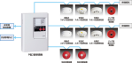

2023年
問題99 建築設備に関する次の記述のうち，最も不適当なものはどれか．
（1）自動火災報知設備は，主に感知器，受信機，非常ベルなどで構成される．
（2）避雷設備は，高さ18mを超える建築物に設置が義務付けられている．
（3）建築基準法により，高さ31mを超える建築物(政令で定めるものを除く．)には，非常用の昇降機を設けなければならない．
（4）勾配が30度を超え35度以下のエスカレーターの定格速度は，30m/min以下とされている．
（5）非常用照明装置は，停電を伴った災害発生時に居住者や利用者を安全に避難させるための設備である．
2023年
問題99 正解（2） 頻出度AAA
建築基準法第33条 高さ20メートルをこえる建築物には，有効に避雷設備を設けなければならない．ただし，周囲の状況によつて安全上支障がない場合においては，この限りでない．
-(1) 自動火災報知設備の構成の例を2023-99-1図に示す．

出典 能美防災株式会社
https://www.nohmi.co.jp/product/gh/product/facilities/index.html
-(4) エスカレーターの定格速度は2023-99-1表参照．
2023-99-1表 エスカレータ，動く歩道の定格速度
| 勾配 | 定格速度 | 揚程（階高） | 適用 | |
| 8度以下 | 50m/min以下 | － | 動く歩道 | |
| 8度を超え30度以下 | 15度以下で踏段が水平でないもの | 45m/min以下 | － | |
| 踏段が水平なもの | － | エスカレータ | ||
| 30度を超え35度以下 | 30m/min以下 | 6m以下 | ||
-(5) 倉庫などを除くほとんどの建築物に，非常用の照明設備の設置が建築基準法で規定されている．
ただし，次の各号のいずれかに該当する建築物又は建築物の部分については，設置しなくてもよい．
1．一戸建の住宅又は長屋若しくは共同住宅の住戸
2．病院の病室，下宿の宿泊室又は寄宿舎の寝室その他これらに類する居室
3．学校等
4．避難階又は避難階の直上階若しくは直下階の居室で避難上支障がないものその他これらに類するものとして国土交通大臣が定めるもの